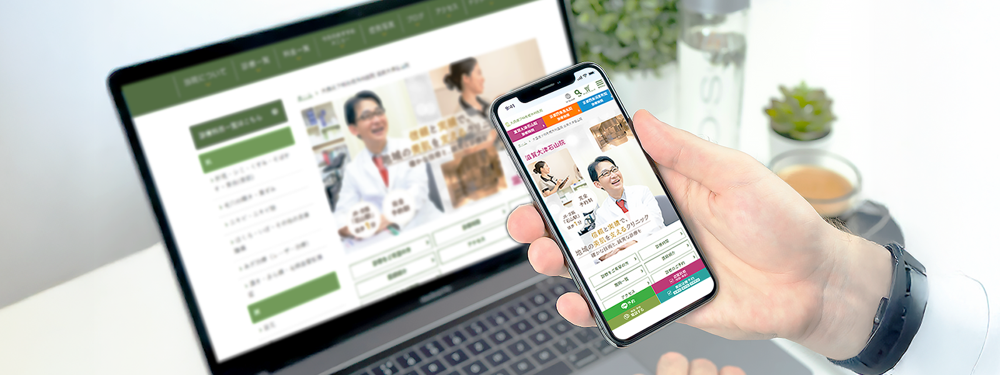
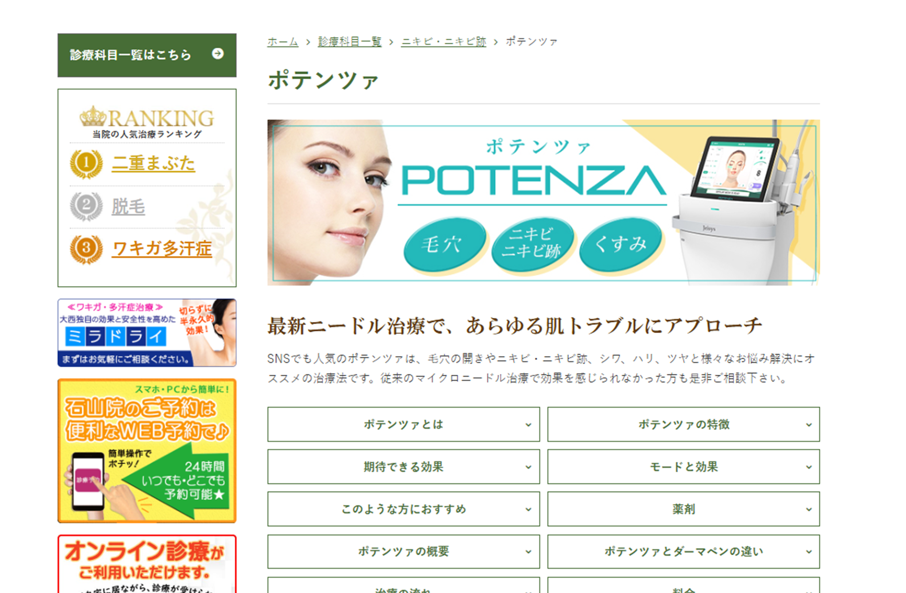
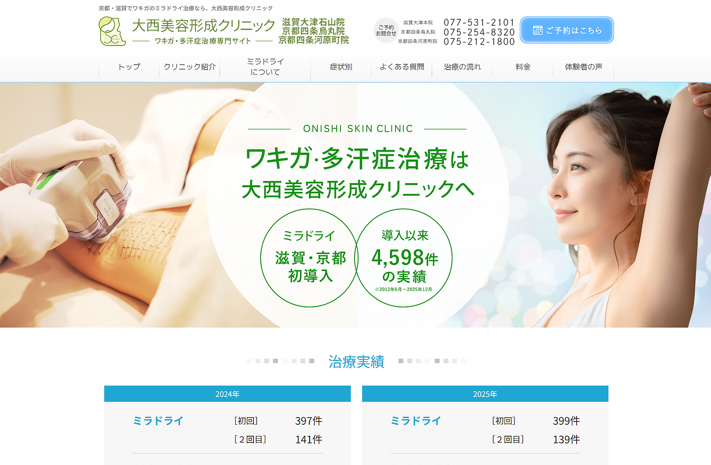
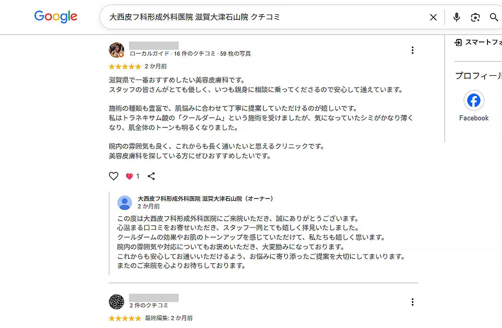
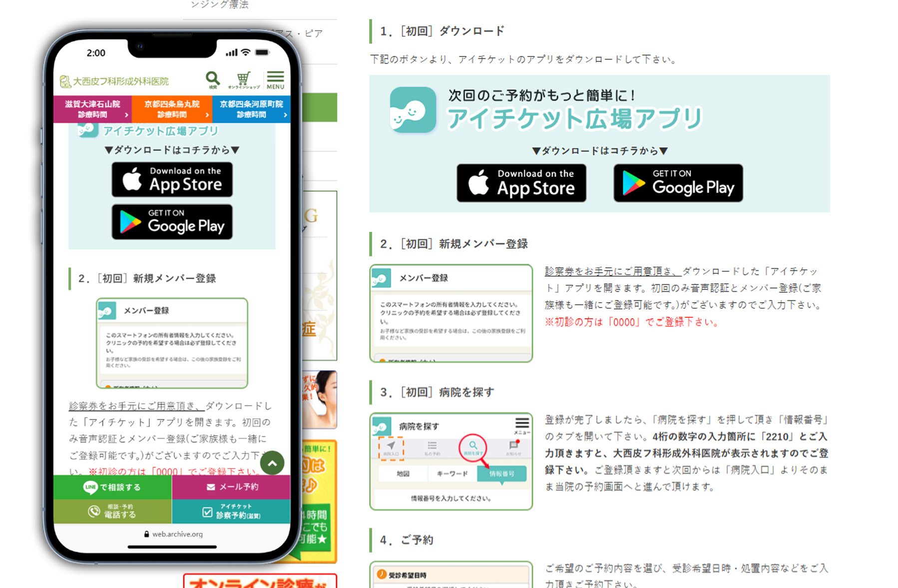

■ 検索ニーズの多様化と地域検索強化
施術名だけでなく「地域×施術」「悩み×施術」「部位×施術」など、ユーザーごとに施術検索の仕方が複数化していた。 検索ニーズに合わせて入口ページを増やす必要がある一方で、コピーページ化の回避や情報の整合性への配慮、継続運用時の修正負荷も考慮した設計が必要だった。 また京都エリアでは、各院ページや主要施術ページを整備し、院ごとの特徴や対応施術を反映した地域的な検索強化も求められた。
01. CASE STUDY

概要
本院・分院・施術専門サイトをまたいで、検索流入の拡大・施術理解・予約導線・口コミ運用・ブランディングなど複数の施策を継続的に回し続けた実務ケース。
独自CMS（コンテンツ管理システム）や医療ガイドライン、少人数運用という制約の中で、各院のSEO強化、施術専門サイトの改修、地域×施術ページ、予約導線、チャットボット導入、LINE整備、口コミ返信などを優先順位をつけながら推進し、来院につながる接点を拡大した。
滋賀県において知名度の高い皮膚科・美容皮膚科を運営する病院で、主に滋賀・京都エリアで施術を検討しているユーザーが対象。ただし、治療においては遠方からの来院もあるため、範囲としては関西広域。
自然検索の流入を促進し、新規ユーザーの獲得を目的とする。 また、日々進歩する医療領域であるため、情報の正確性とスピード感、安心感、医療ガイドラインに従ったサイト作成・継続的な運用を重視。
WEB・紙・他社サービスを横断した新規施策の企画・実行に加え、既存サイトの改善やSEO運用などの継続施策も並行して担当。
SEO会社や外部制作会社と連携しながら、施策の検討・実行、さらに外部指示まで担当。新規施策の実行だけでなく、継続的に運用できる体制の構築も進行した。
02. PROBLEM
施術名だけでなく「地域×施術」「悩み×施術」「部位×施術」など、ユーザーごとに施術検索の仕方が複数化していた。 検索ニーズに合わせて入口ページを増やす必要がある一方で、コピーページ化の回避や情報の整合性への配慮、継続運用時の修正負荷も考慮した設計が必要だった。 また京都エリアでは、各院ページや主要施術ページを整備し、院ごとの特徴や対応施術を反映した地域的な検索強化も求められた。
Googleの評価基準やユーザーの検索意図は頻繁に変化しており、地域×施術ページや施術専門サイトなど、検索ニーズに合わせたページ構造への継続的な改善が求められた。 一度制作して終わりではなく、検索評価やユーザーニーズの変化に合わせて、継続的に修正・運用を行う必要があった。
公式サイト、専門サイト、ブログ、SNS、LINE、口コミ返信など、ユーザー接点は増加し続けていた。 また、WEBだけでなく院内資料やPOP制作、通販事業運営なども並行して進行しており、2〜3名の少人数体制の中で、継続運用できる体制づくりや優先順位整理が必要だった。
医療ガイドラインや独自CMSの仕様に加え、病院の運営体制やそれぞれの医師・スタッフの対応できる施術にも考慮しながら改善を進行。 自由に作り替えるのではなく、既存環境で実現可能な改善設計が求められた。
03. THE INSIGHT
目的ごとに施策を考え分け
「改善を継続」することが重要
同じSEO改善施策であっても、検索需要への対応・地域検索の強化・施術理解や専門性訴求など、それぞれ目的や主軸が異なっていた。
そのため、課題やユーザー心理を整理しながら、目的に合わせた施策設計を行うことが重要だった。
また、効果だけでなく「病院運営として実現可能か」「ブランディングに沿っているか」といった現実的な視点も踏まえながら改善を進める必要があった。
さらに、新規施策と継続施策のどちらにおいても、根幹には「改善を継続する」という考え方があった。そのため、制作して終わりではなく、改善を継続できる管理体制や運用負荷まで含めて設計することが、継続的なサイト改善には重要だった。
04. EXECUTION
EXECUTION 01
京都・滋賀の検索ボリュームを比較し、より検索需要の強い地域・施術キーワードをもとに入口ページを設計。病院サイト以外の業種にも応用できる、検索の需要から逆算した流入強化を目的とした施策。

新しく導入された施術に対して、京都でどのような検索需要があるかを確認したところ、「地域×施術名」での検索ニーズが強い状態だった。 一方で、病院名を知らないユーザーに対する検索入口は十分ではなかった。
SEO会社と検索ボリュームを確認し、京都ページの配下に新規施術ページを作成。病院名を知らないユーザーにも接点を作るため、検索需要をもとに入口ページを設計した。
公開後は、比較的新しいページながら閲覧数を獲得しており、検索需要をもとにした入口施策として機能した。地域名と施術名を掛け合わせた検索入口を増やすことで、病院名を知らないユーザーにも接点を作りやすくなった。
EXECUTION 02
新規開院に合わせて、京都エリアでの検索強化を目的に、京都専用ディレクトリを追加。
「京都×美容」「京都×施術」などの地域検索に対応するため、各院ごとの情報整理とページ整備を行った。

新規開院に伴い、京都エリアでの検索接点を強化する必要があった。本院ドメインは滋賀を軸としていたため、「京都×美容」「京都×施術」などの地域検索では、各院ごとの情報や接点が不足していた。そのため、京都エリアに最適化した各院ごとの情報設計が必要だった。
SEO会社と構成方針を確認しながら、京都専用ディレクトリ配下に各院ページを新規構築。地域検索を意識し、TOPページだけでなく、アクセス・診療時間・FAQ・医師紹介・予約導線など、院ごとに必要な周辺ページも整理・整備した。
京都専用のディレクトリを設けることで、各院ごとに京都エリアで検索されやすい状態を整備した。本院ドメインだけでは届きにくかった地域検索に対して、各院ごとの検索接点を強化する施策として機能した。
EXECUTION 03
AGAサイトやミラドライサイトなど、すでに作成されていた専門サイトにおいて、Googleの検索評価の変化に合わせた情報の整理・改善運用を実施。 SEO会社や外部制作会社と連携しながら、コラム追加やページ構成の見直し、病院サイトとの導線整理を行い、継続的な流入の改善と専門性のアピールにつなげた。

以前より複数の専門サイトを運営していた。しかし、検索エンジンの評価やユーザーニーズの変化によって、制作当時のままでは評価維持が難しくなり、継続的な情報整理や改善運用が必要な状態となっていた。また、施術理解を深めながら、病院としての専門性も伝える情報設計が求められた。
SEO会社や外部制作会社と連携し、目的・構成・掲載内容・表現方針を整理。コラム追加や情報整理、病院サイトとの導線の見直しなどを継続的に行いながら、検索評価の変化に対応した改善を進行した。
AGAサイトでは、SEO会社変更に伴う病院ドメインへの移設対応も行い、医療表現やCMS制約を踏まえながら運用を整理した。
制作当時のままだった専門サイトは、コラム運用や情報整理を継続したことで流入改善につながった。あわせて、病院がその施術に注力している印象を伝えやすくなり、ユーザーに専門性のアピールを行う施策としても機能した。
EXECUTION 04
当初はブランディングやSEO目的だった施策が、ユーザーがよく見るコンテンツへ変化。現在ではAIO対策も含め、時代に合わせて役割が進化している運用施策。施策の重要度が上がるにつれ、口コミ運用は病院全体で活用する施策となり、ブログ記事は継続的に行うための外部制作に依頼する体制を整えた。

医療・美容医療では来院前の不安が大きく、公式サイト以外にも口コミや記事コンテンツを確認して判断するユーザーが増えていた。しかし、入社当時はそういったものへの対応は一切行っておらず、返信体制を作る必要があった。
口コミ返信はブランディング施策として始まり、ブログはSEO記事として運用していた。検索行動やAI回答の変化といった時代のニーズに合わせ、信頼形成・情報補完・AIO対策を兼ねる接点として捉え直し、継続的な運用を行うため外部制作に依頼する体制を整えた。
口コミやブログが、来院前の判断材料としてだけでなく、検索やAI回答上で病院の情報を補足する接点にもなった。ひとつの施策が、信頼形成・SEO・AIO対策を兼ねる形へと役割を広げた。
EXECUTION 05
予約方法の変化に合わせて、WebやLINEの導線整備・紙媒体や院内掲示での告知といった媒体を横断しての整備を実行。あわせてGoogleビジネスプロフィール、LINE、YouTubeなど外部接点のプロフィールも整え、ブランディング整備とSEO対策を実施。

電話予約中心から、メール予約・オンライン予約・LINE予約へと予約方法が変化し、ユーザーが迷わず予約できる導線と説明が必要になった。
予約方法の変更案の発案自体は病院スタッフが行う前提で、SEO会社とも相談しながら、ユーザーが使いやすい導線を検討。Web上の説明、LINEリッチメニュー、HOWTO、院内POPなど複数接点で案内できる形にした。
予約方法の変更時にも、ユーザーが迷わず行動できる案内を複数接点で整備できた。Webだけで完結させず、LINEや院内掲示も含めることで、現場運用にも乗せやすい形にした。
OTHER IMPROVEMENTS
代表的な施策以外にも、Web・紙・院内接点を横断して、必要に応じた制作・改善を継続して行いました。
05. OUTCOME
病院サイト・専門サイト・通販事業を並行して運用する中で、地域検索の強化・専門サイトの改善・予約導線の整備など、目的の異なる施策を継続的に推進。検索ニーズやGoogle評価の変化に合わせて、修正・改善を回し続けた。
病院サイトでは、各院ページや施術ページについても、検索ニーズやユーザー導線に合わせて整理・改善を継続。地域検索におけるエリア検索の強化だけでなく、施術理解から予約導線までをつなぐ構造の改善にもつながった。
また、制作当時のまま運用されていた専門サイトについても、SEO評価やページ情報の構造を見直し、サイト移管やページ整理を実施。流入改善だけでなく、専門性をアピールする接点としても再活用につながった。
さらに、口コミ返信やブログ更新などの継続施策も並行して運用。ブランディングやSEO対策として始めた施策だったが、結果としてAIO対策にもつながる重要な接点となった。
SEO設計とコンテンツ改善を通じて、セッション数は前年同月比5.9%増加。また「地域×施術」などの関連キーワードでは、継続して12ワードで検索上位表示を獲得している。
06. LEARNING
病院サイト改善を通して、デザインやSEO施策は、単に制作を行うだけでは成立せず、病院運営・予約導線・医療表現・運用体制など、実際の現場運営まで含めて考える必要があると学んだ。 特に医療領域では、「集客できるか」だけでなく、ユーザーに過度な期待を与えない表現設計や、実際の診療・運営体制と乖離しない情報設計も重要だった。
また、検索ニーズやGoogle評価は継続的に変化するため、制作して終わりではなく、優先順位を整理しながら改善を回し続けることが必要だった。
その中で、一人で抱え込むのではなく、チームで課題や改善案を共有しながら運用を続けることで、継続的な改善につながることを実感した。
07. NEXT ACTION